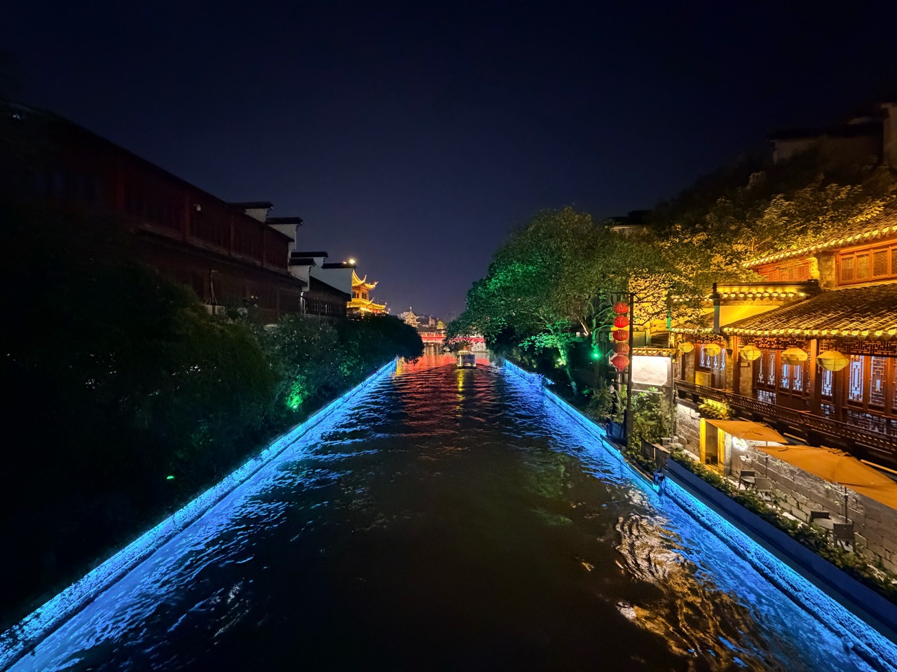

A CARBON-BASED LIFE / 无限探索中
碳基生命
璀璨夺目
把世界装进镜头，
把平凡的日子，过得闪闪发光。

夜色，自有回响。SELECTED FRAME / 003
光影漫游 ↗01 / THE PHOTO ARCHIVE
世界的切片.
10 个瞬间，无数种心情。
点击照片，靠近一点。
02 / ABOUT THIS LIFE你好，
你好，
这里是我的视角。
我是「碳基生命璀璨夺目」。
用照片收集旅途中的光，
也为日常里那些值得停留的瞬间，
留一个位置。
城市漫游旅行影像日常观察保持好奇 ↗
自我介绍为初版示例文案，可替换为你的故事。
影像来自你提供的 10 张照片；照片标题为画面描述。
TO BE CONTINUED / 旅途未完
下一帧，继续璀璨。
↑下一帧，继续璀璨。